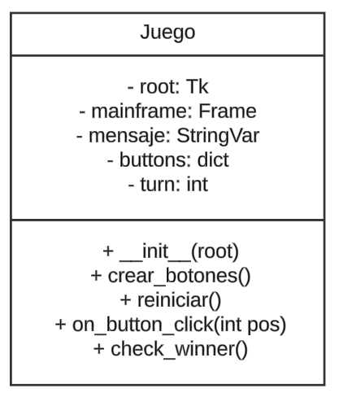

Gato Game
Introducción.
Esta pagina documenta como se realizo el juego del gato (Tic Tac Toe).
Objetivos.
- Crear el juego del gato en Python.
- Practicar conocimientos de programacion orientada a objetos en Python.
Tecnologias que se usaron.
- HTML: Para documentar el juego en una pagina web.
- Python: El lenguaje en el que se desarrollo el juego.
- GitHub: Para lograr la colaboracion entre los desarrolladores.
Estructura del Juego.
El juego del gato se compone de:
- Un tablero de 3x3 celdas.
- Dos jugadores: X y O.
- Un sistema para alternar turnos.
- Un mecanismo para determinar un ganador o un empate.
- Un boton para reiniciar el juego en caso de victoria o empate.
Pruebas.
Las prubas comprobaron la correcta funcionalidad de:
- Alternancia de turnos.
- Detección precisa de ganadores.
- Manejo de empates.
- Los botones y elementos de la interfaz.

Atributos/Metodos.
Atributos:
root: Inicializa la ventana principal del juego.
mainframe: Crea un marco principal dentro de la ventana.
mensaje: Variable para mostrar mensajes en la interfaz.
buttons: Llama a la función para crear los botones del tablero.
turn: Variable para llevar el control del turn.
Metodos:
void __init__(root): El constructor _init_ inicializa la ventana principal.
void crear_botones(): Crea los botones del tablero de Tic-Tac-Toe.
void reiniciar(): Reinicia el juego.
void on_button_chick(int pos): Maneja el evento de clic en un botón del tablero.
str check_winner(): Verifica si hay un ganador o un empate.
Integrantes.
- -Rosario Reyes Martinez
- -Sebastian Perez Perez